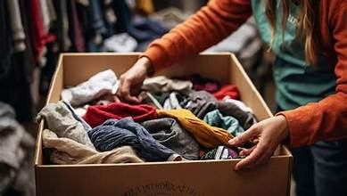

01 · VESTUÁRIO
Roupa que aquece
Arrecadamos roupas, calçados e cobertores em boas condições. Depois da triagem, os itens são organizados e destinados a famílias e pessoas que necessitam desse apoio.
- Roupas adultas e infantis
- Calçados em bom estado
- Cobertores e agasalhos